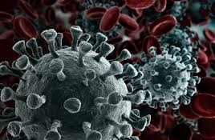
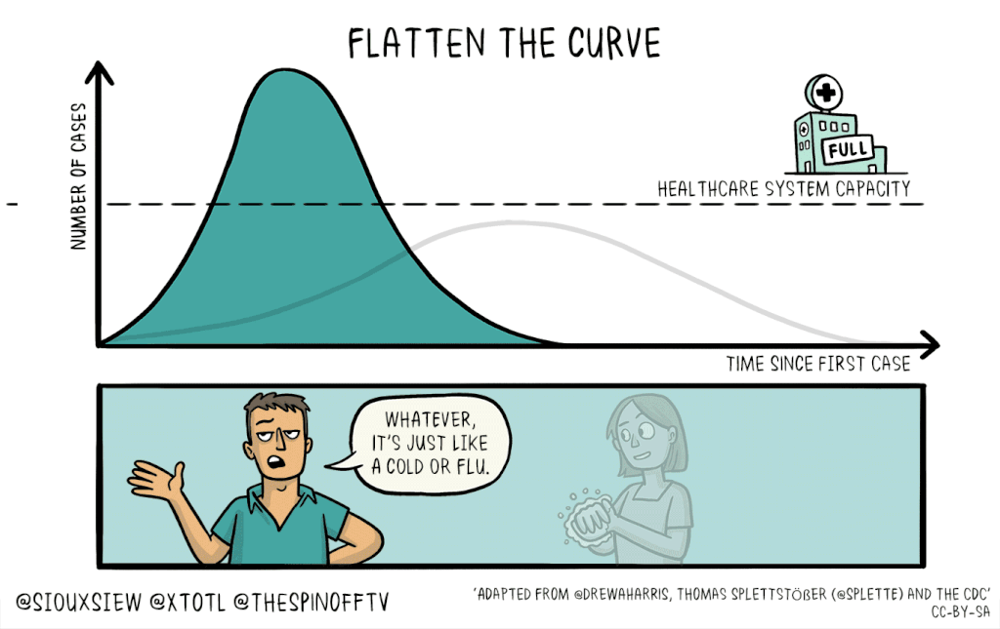

Know your enemy
before you go to war

The 2019–20 coronavirus pandemic is an ongoing pandemic of coronavirus disease 2019 (COVID-19) caused by severe acute respiratory syndrome coronavirus 2 (SARS-CoV-2).The outbreak was first identified in Wuhan, Hubei, China, in December 2019 and recognised as a pandemic by the World Health Organization (WHO) on 11 March 2020. As of 17 March 2020, more than 194,000 cases of the disease have been reported in over 160 countries and territories, resulting in more than 7,800 deaths and around 81,000 recoveries. Regions affected by major outbreaks include mainland China, Europe, Iran, South Korea, and the United States. On 13 March, the WHO stated that Europe had become the new epicentre of the pandemic.
| Disease |
Coronavirus disease 2019
(COVID-19) |
|---|
| Virus strain |
Severe acute respiratory syndrome
coronavirus 2 (SARS-CoV-2) |
|---|
| Location |
Worldwide (list of locations)
|
|
| First case |
Wuhan, Hubei, China
30°37′11″N 114°15′28″E |
|---|
| Date |
1 December 2019–present
(3 months and 2 weeks) |
|---|
| cases |
194,000+ |
|---|
| Recovered |
81,000+ |
|---|
| Deaths |
7,800+ |
|---|
| Territories
|
160+ |
|---|
Efforts to prevent transmission have included travel restrictions, quarantines, curfews, event postponements and cancellations, and facility closures. These include a quarantine of Hubei, the nationwide quarantines of Italy, Spain, the Czech Republic, and Germany, curfew measures in China and South Korea, various border closures or incoming passenger restrictions, screening methods at airports and train stations, and travel advisories regarding regions with community transmission. Schools and universities have closed either on a nationwide or local basis in at least 115 countries, affecting more than 950 million students.
Effects of the pandemic include social and economic instability, xenophobia and racism against Chinese, East and Southeast Asian people, the suspension of in-person religious services,the postponement or cancellation of sporting and cultural events, as well as the online spread of misinformation and conspiracy theories about the virus.

How to Protect Yourself and Others from the Coronavirus
March 15, 2020 Leave a comment The Science Unsealed Editorial Staff
As a science outreach organization, we wish we could add more to the conversation about how to stay safe from #COVID19, but the truth is, experts have already said what needs to be said. Here’s what you you need to know to protect yourself and others from the coronavirus:
The Importance of Social Distancing
- In most people, the virus will present mildly, which means you might get a mild cough or a low-grade fever,
or you might not not feel any symptoms at all. But you can still pass it onto others, including others who
won’t have such a mild reaction. This is why social distancing is so important.
- Social distancing means staying
at least six feet away from others, as much as you can. The easiest way to do this is to stay at home.
Use Skype, Facetime, and other video conferencing services to keep yourself sane and to get your work done.
But you probably need to cross paths with some people, so there are some ways you can reduce your chance of
sharing the virus with someone else.
Here’s how one person did it for six months with her premature twins.
- The things that increase the chance of transmission, in order from least to most impact are:
- being physically close to someone,
- being near someone for a prolonged period of time.
- making physical contact with someone.
New York Times released a graphic showing how likely people in different jobs
are to get infected based on these variables. Healthcare workers are at the greatest risk.
Keep Surfaces Clean
- The coronavirus can’t be transmitted through the air like measles. Measles can latch onto dust particles and
float in the air for hours. In contrast, coronaviruses get carried in droplets, which come from coughs and
sneezes, and land within a few seconds on people and surfaces. So, make sure to cover your coughs and sneezes,
and don’t touch your face after you touch a surface.
- Coronaviruses are relatively fragile, as far as viruses go.
This means antiseptic wipes that kill things like MRSA will likely kill the coronavirus. So, keep “high-touch”
surfaces, like your phone, doorknobs, keyboards, etc. disinfected with wipes. The EPA, which decides what companies
can say about their disinfectants, just updated their list of disinfectants that can be used against the coronavirus.
How to Keep Germs Off of You
- There’s nothing better than old-fashioned soap and water to keep your hands clean. Soap is actually more effective
than hand sanitizer at killing or deactivating hard-to-kill microbes. The CDC recommends that you wash your hands
regularly for 20 seconds, not forgetting get your thumbs and between your fingers.
- masks you buy at stores or online won’t protect you from catching the virus. They only work if they’re sealed to your face.
Heath care workers are wearing masks that are specifically designed for this. The masks you have will only help prevent you,
if you’re already sick, from transmitting the virus to others.
Watch Out for those at the Greatest Risk
- sure your friends and family who are over sixty, have heart or lung disease, diabetes, or who are immunocompromised,
are extra careful. Here are the CDC guidelines on who is at the highest risk of experiencing complications and what
you can to protect them.
Most importantly, remember not to panic. Viruses can be scary, but with the proper precautions,
such as washing our hands and distancing ourselves from others, we can beat this thing.